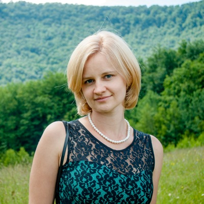

photographer

Привіт! Мене звати Юлія. Я живу і працюю у Львові. Я займаюся тим що мені дуже подобається і дарує радість в житті: я дитячий і сімейний фотограф.
Впевнена, що дитячі фотографії є найщирішими і найтеплішими. Люблю ловити за допомогою свого фотоапарата дитячі посмішки та секунди неповторних емоцій. А ще я - мама і мої синочки завжди надихають мене в моїй роботі і творчості.
Hайщасливіші моменти життя: зустріч закоханих, весілля, вагітність, народження малюка, прогулянки щасливої родини разом....я допоможу вам зберегти найцікавіші події у вашій пам 'яті назавжди.